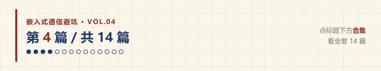
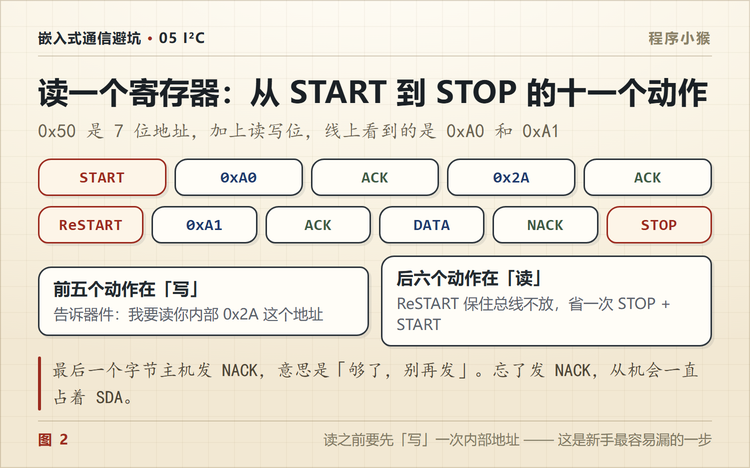
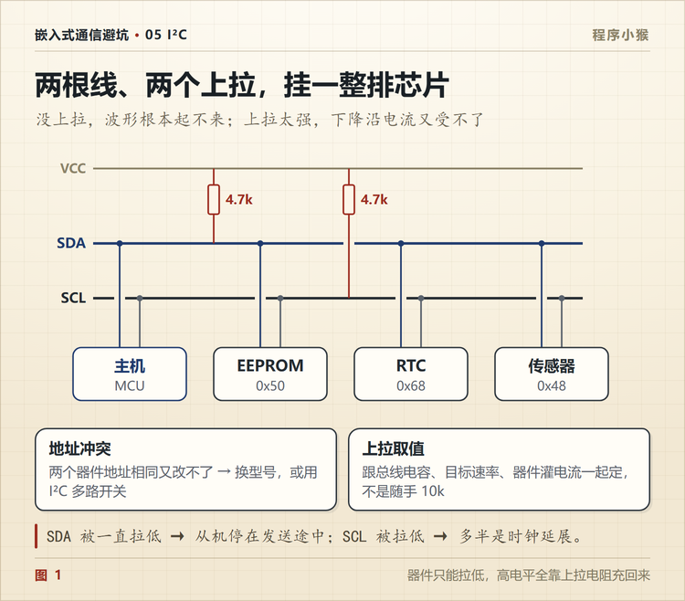

I2C 读 EEPROM，从 START 到 STOP 的 11 个动作
🐵 程序小猴 · 嵌入式通信避坑 Vol.04
时序图看着只有两条线，真写驱动的时候少一步就是全 0xFF。

第一次用 I2C 读 24C02，串口打出来一整屏 0xFF。
地址对不对、上拉有没有、器件到底在不在，我查了一圈。示波器抓上去，波形干干净净，ACK 也回来了。
问题出在第三步和第四步之间，我落下了一个东西。
一、先数清楚有多少步
读一个字节，完整时序是 11 个动作。
| # | 动作 | 谁发的 | 说明 |
|---|---|---|---|
| ① | START | 主机 | SCL 高时，SDA 由高拉低 |
| ② | 0xA0 | 主机 | 7 位地址 0x50 左移，末位 0 表示写 |
| ③ | ACK | 从机 | 第 9 个时钟把 SDA 拉低 |
| ④ | 0x2A | 主机 | 要读的内部寄存器地址 |
| ⑤ | ACK | 从机 | 收到了，指针停在这里 |
| ⑥ | ReSTART | 主机 | 不释放总线，重新开始 |
| ⑦ | 0xA1 | 主机 | 同一地址，末位 1 表示读 |
| ⑧ | ACK | 从机 | 准备吐数据 |
| ⑨ | 数据 | 从机 | 8 位，高位先出 |
| ⑩ | NACK | 主机 | 第 9 个时钟不拉低 SDA |
| ⑪ | STOP | 主机 | SCL 高时，SDA 由低拉高 |
少任何一步，后面的都不成立。

我第一次就是省了第 ⑥ 步，发完寄存器地址直接 STOP，然后重新 START 去读。从机那边的事务已经结束了，读回来的自然是总线的空闲电平。
而 I2C 空闲是高，所以读出来是 0xFF，不是 0x00。这个细节很有用，看到满屏 0xFF，先怀疑自己少发了一步，而不是器件坏了。
二、0x50 还是 0xA0
这是新手最容易绕晕的一处。
同一个器件，两个数字都对，看你问的是谁。
| 说法 | 值 | 含义 |
|---|---|---|
| 7 位地址 | 0x50 | 器件地址本身，1010000 |
| 写地址 | 0xA0 | 0x50 左移一位，末位补 0 |
| 读地址 | 0xA1 | 0x50 左移一位，末位补 1 |
24C02 的 7 位地址是 1010 加三个引脚电平，A2/A1/A0 接地就是 0x50。
麻烦在于不同库的 API 要的不一样。HAL 库的 HAL_I2C_Master_Transmit 收的是左移后的 8 位地址，很多 Arduino 库收的是 7 位地址、内部自己移。
传错了不报错，就是一直 NACK。所以写驱动前先确认一件事，这个 API 要 7 位还是 8 位。
三、寄存器地址是发给从机的
第 ④ 步那个 0x2A，不是数据，是「我要读你内部哪个位置」。
EEPROM、RTC、传感器这类器件，内部都有一块寄存器或者存储区。你用地址选中了器件，还得再告诉它选哪一格。
这一步之后从机的内部指针就停在那儿，等你来读。
有些器件支持连续读，读完一个字节不发 STOP，继续给时钟，它会自动指向下一个地址。页读、突发读就是这么来的。
四、Repeated Start 不能拆
第 ⑥ 步是这个时序里最容易被简化掉的一步。
为什么要用 ReSTART，而不是 STOP 之后再 START？
因为 STOP 会把总线释放掉。
单主机系统里，释放一下再抢回来，通常也没事。但两个原因让它不能省。
一是多主机。你松手的那一瞬间，另一个主机可能正好抢到总线，你的读操作就得从头再来。
二是从机状态。部分器件收到 STOP 之后内部状态机复位，之前写进去的寄存器指针就丢了，重新 START 还得再发一遍地址。
ReSTART 的作用就是「我不松手，但我要换个方向说话」。
五、最后一个字节为什么发 NACK
第 ⑩ 步，主机读完之后要发 NACK。
逻辑是这样的。每个字节后面第 9 个时钟，接收方都要表态。ACK 是拉低 SDA，意思是「我还要」。NACK 是不拉低，意思是「够了，别发了」。
主机读最后一个字节时必须发 NACK，从机才知道该松手，把 SDA 让出来，主机才能发 STOP。
要是一直 ACK，从机会以为你还要，继续往下吐数据，STOP 就发不出去。
六、上拉电阻怎么选
I2C 的引脚是开漏结构，只能拉低，不能推高。高电平全靠上拉电阻给总线电容充电充上来。
所以上升沿的陡缓，直接决定你能跑多快。

经验公式是这样。
t_r ≈ 0.8473 × R × C
t_r 是上升时间，R 是上拉阻值，C 是整条总线的电容。
标准给了两条硬约束。
- 100 kHz 标准模式，t_r 不超过 1000 ns
- 400 kHz 快速模式，t_r 不超过 300 ns
- 总线电容 C 一般不超过 400 pF
举个具体的。总线上挂了四个器件，走线十来厘米，估下来 C 大约 200 pF，要跑 400 kHz。
R ≤ 300 ns ÷ (0.8473 × 200 pF) ≈ 1.77 kΩ
所以选 1.5 k 或者 1.8 k。
但也别太小。器件拉低的时候要灌电流，标准规定 3 mA 以内。3.3V 系统里，R 不能小于 (3.3 - 0.4) ÷ 3 mA ≈ 967 Ω。
合起来，这条总线的上拉取 1 k 到 1.8 k 之间。
如果只跑 100 kHz，电容又不大，4.7 k 到 10 k 都行。这也是为什么开发板上到处是 4.7 k，而高速场合要换成 1.5 k。
七、SDA 被拉死
还有一种情况，比少发一步难查得多。
MCU 在一次传输中途复位了，从机还停在「发数据」的状态里，SDA 被它一直拉着不放。这时候主机想发 START 都发不出去，因为 SDA 根本不是高。
这是下一篇要讲的东西，这里先记住一句，成熟产品要做总线恢复，别指望实验室里通一次就算完。
八、按这个顺序查

| 顺序 | 查什么 | 怎么查 | 典型现象 |
|---|---|---|---|
| ① | 地址是 7 位还是 8 位 | 看 API 文档 | 一直 NACK |
| ② | 上拉有没有、多大 | 量空闲态 SDA/SCL 电压 | 波形起不来、边沿发圆 |
| ③ | 时序有没有少步 | 对照 11 个动作 | 读回全 0xFF |
| ④ | ReSTART 用的是不是真的 ReSTART | 抓波形看中间有没有 STOP | 数据错位 |
| ⑤ | 最后一个字节有没有 NACK | 抓波形看第 9 个时钟 | STOP 发不出去 |
| ⑥ | 从机地址冲突 | 逐个断开试 | 多个器件同时应答 |
| ⑦ | 总线被拉死 | 量 SDA 是不是常低 | 完全无法开始 |
第 ③ 步对照表是最快的。11 个动作，对着数一遍，比读三遍驱动代码有用。

I2C 的漂亮之处在于两根线挂一串器件。
它的麻烦也在这里，出问题时你面对的是一条共享总线，任何一步不对，所有器件都不说话。
你读过最坑的 I2C 器件是哪个？评论区说说型号。
📌 这是「嵌入式通信避坑」第 4 篇，全系列 14 篇，从串口一路讲到 CAN 和无线选型。
💬 觉得有用就点个在看，下一篇讲 SDA 被拉死之后怎么把它救回来。